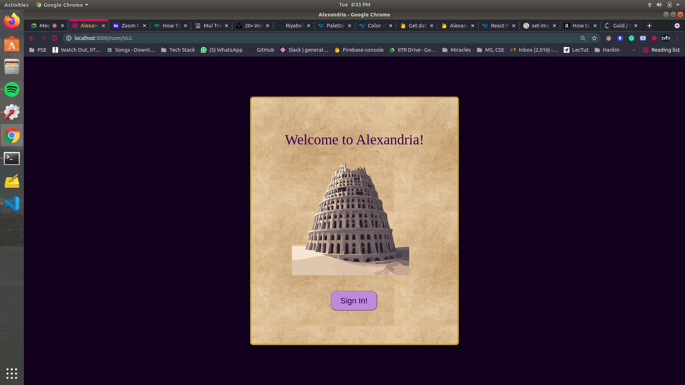

Welcome to Alexandria!
To check out Alexandria visit here. To check out the code visit GitHub

Project Alexandria is my attempt at cloning the Microsoft Teams App as part of the Engage Mentorship Programme'21.
The Great Library of Alexandria was one of the most significant libraries of the ancient world. It came to be regarded as the capital of learning and knowledge. Drawing inspiration from this, I visualised a collaborative virtual infrastructure where new spaces can be created for teams to meet and work.

Just as the Library of Alexandria was the hub for sharing of knowledge in the ancient times, I see platforms like Teams being the hub for collective working, growing and learning in these new times brought about by the Pandemic.
Tech Stack
Although familiar with NodeJs projects, this was my first time coding in JS- especially working with React 😥.
I learnt on the get-go, and spent- sometimes hours on end debugging! It was challenging but in a good way.
Here's the tech stack involved for each of the functionalities:
-
App Authentication: Firebase Authentication using Google Auth-Provider.
-
Video-Call Functionality's Back-End: Used
Expressframework to code the server-side where my Client pings during a video-call. Code can be found atserver\index.jsfrom repository. -
Video-Call Functionality: Using
PeerJS(wrapsWebRTC),socket.io\socket.io client. Also usingSTUNservers to allow remote participation! -
Client-side:
React JSfor Alexandria's front-end.Reduxfor users' state management. Code can be found underclient\from repository. I have made good use of@material-uiandmui-treasurypackages for building aesthetic UI components. -
Database: Firestore database for storing data on the cloud- for eg. the rooms a user has joined, the chat messages, and user information.
Functionalities offered
To know more about the functionalities themselves, navigate to their section:
-
Login: In order to enter Alexandria, you need to sign-in with a Google account.
-
Home: You can see the list of users on your left and the list of joined Rooms in the center. To add more rooms, click on
Join Rooms -
Call: To instantly connect with a friend, click on
connectbesides their name from the user list. This shall redirect you to a meeting, and send your friend a notification pop-up asking them to join you. Please note that your friend will have to be signed-in and on the app interface in order to recieve the pop-up! -
Chat: Chat feature is available throughout Alexandria. You can send a direct message to a friend from the Home, or chat with room-members from a particular Room.
-
Rooms: Each Room is modelled after a Team from the Microsoft Teams App. A Room is a virtual workspace made for team collaboration over a particular activity- be it a project, or a university course or even event management. Conversation can be maintained by creating
Channelsin a room, to keep discussions organised. -
Meetings: Group Video Calls; this is also the minimum functionality to be coded in for the Engage Mentorship Programme. Asides from directly calling an online user and have a one-on-one video call; Meetings can also be started from a Room itself, after which the meeting link can be copied and shared to invite others.
Routing within App:
react-router-dom has been used to route user to different features of Alexandria. Following are valid routes:
Code Quality:
Prettier and Eslint has been used to maintain code quality as well as linting checks.
CI/CD and Hosting:
- Deployment The Client is deployed on the Cloud using Firebase Hosting services- and my Server is deployed on Azure using Web App Services.
The
server_url(the URL where Server is deployed on Azure) is used in the client-side of Video-Call functionality for socket.io to make and get requests. - CI/CD Project Alexandria is on GitHub. I use GitHub Actions for Firebase to run jobs for build deployments as well as linting checks.
Testing:
React-testing libraries:
@testing-library/jest-dom,
@testing-library/react,
@testing-library/user-event,
react-test-renderer,
along with redux-mock-store,Jest``Enzyme has been used to write component tests.
Documentation:
Use mkdocs to build this documentation and serve it onto GitHub Project Pages.